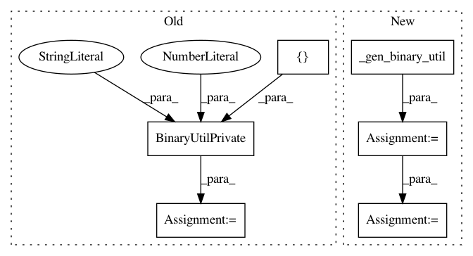

4757f9677adfec90a399cb92227fe4686faefcc2,tests/python/pants_test/binaries/test_binary_util.py,BinaryUtilTest,_fake_url,#Any#Any#Any#Any#,51
Before Change
@classmethod
def _fake_url(cls, binaries, base, binary_key):
binary_util = BinaryUtilPrivate([], 0, "/tmp")
supportdir, version, name = binaries[binary_key]
binary = binary_util._select_binary_base_path(supportdir, version, binary_key)
return "{base}/{binary}".format(base=base, binary=binary)
After Change
@classmethod
def _fake_url(cls, binaries, base, binary_key):
binary_util = cls._gen_binary_util()
supportdir, version, name = binaries[binary_key]
binary_request = binary_util._make_deprecated_binary_request(supportdir, version, name)
binary_path = binary_request.get_download_path(binary_util._host_platform())
return "{base}/{binary}".format(base=base, binary=binary_path)
@classmethod
def _gen_binary_tool_fetcher(cls, bootstrap_dir="/tmp", timeout_secs=30, fetcher=None,
In pattern: SUPERPATTERN
Frequency: 3
Non-data size: 6
Instances
Project Name: pantsbuild/pants
Commit Name: 4757f9677adfec90a399cb92227fe4686faefcc2
Time: 2018-05-14
Author: 1305167+cosmicexplorer@users.noreply.github.com
File Name: tests/python/pants_test/binaries/test_binary_util.py
Class Name: BinaryUtilTest
Method Name: _fake_url
Project Name: pantsbuild/pants
Commit Name: 4757f9677adfec90a399cb92227fe4686faefcc2
Time: 2018-05-14
Author: 1305167+cosmicexplorer@users.noreply.github.com
File Name: tests/python/pants_test/binaries/test_binary_util.py
Class Name: BinaryUtilTest
Method Name: test_select_binary_base_path_linux
Project Name: pantsbuild/pants
Commit Name: 4757f9677adfec90a399cb92227fe4686faefcc2
Time: 2018-05-14
Author: 1305167+cosmicexplorer@users.noreply.github.com
File Name: tests/python/pants_test/binaries/test_binary_util.py
Class Name: BinaryUtilTest
Method Name: test_select_binary_base_path_darwin